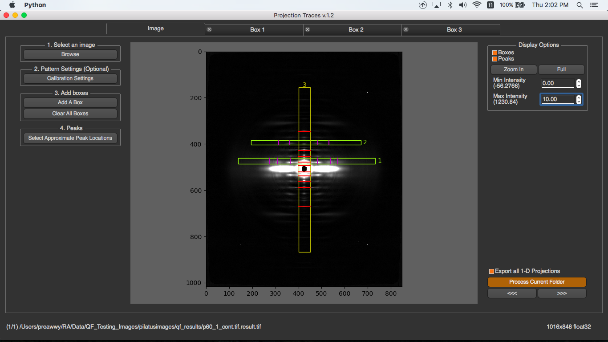

Introduction¶
Even in globally background subtracted images it is usually necessary to reduce 2d diffraction patterns to 1d projections in order to extract accurate position and intensity information from diffraction peaks. While it is possible to do these projections in FIT2D, there is a steep learning curve and its scripting capabilities while powerful, are not easy to use.
Projection traces was conceived originally as a program to extract the integrated intensity along a layer line in order to identify positions of intensity maxima along with their integrated intensities. It also allows measurement of the radial width of meridional reflections. These processes are complicated by the presence of residual background after global 2D background subtraction. The program is now also capable of doing intensity projections along and parallel to the meridian and saving the results as 1D intensity traces to ASCII files for analysis with other programs.
An important capability is to process whole directories of images without user intervention once the program is set up for the desired analysis.
It is important that these images have been pre-processed using the Quadrant Folding program to ensure that the center of the diffraction pattern coincides with the center of the image (image width/2 and image height/2) with the meridian of the pattern parallel to the long axis of the image
This program is available on MuscleX version 1.3.0 or later.
